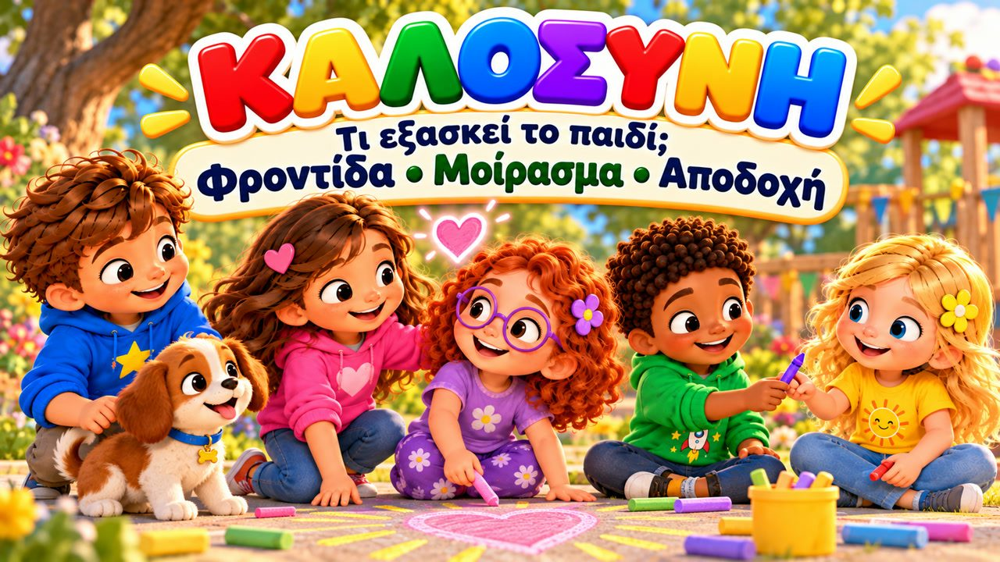

Η Καλοσύνη Λάμπει
Ένα τρυφερό τραγούδι για την καλοσύνη! 🌈 Τραγουδήστε με τον Μαξ, τη Μία, τον Τζέι, τη Λίλη, τη Ρόζα και τον σκυλάκο Μπάντι, που μαθαίνουν ότι ένα χαμόγελο, μια καλή κουβέντα και μια μικρή βοήθεια μπορούν να αλλάξουν τη μέρα κάποιου!
🖍️ ΔΩΡΕΑΝ σελίδες ζωγραφικής, στίχοι & φύλλο δραστηριότητας για αυτό το τραγούδι ➜ dexiotitesmetragoudi.github.io

▶👨👩👧 Τι μαθαίνει το παιδί
- Να προσέχει όποιον είναι λυπημένος ή μόνος και να τον πλησιάζει
- Να προσφέρει βοήθεια: «Θες να καθίσω μαζί σου;»
- Να χρησιμοποιεί τις «μαγικές λέξεις»: ευχαριστώ και παρακαλώ
- Ότι μια μικρή καλή πράξη ταξιδεύει «από παιδί σε παιδί»
💬 Κουβέντα μετά το τραγούδι
- Ποια καλή πράξη έκανες σήμερα;
- Τι μπορείς να πεις σε ένα παιδί που κάθεται μόνο του;
- Πώς νιώθεις όταν κάποιος είναι ευγενικός μαζί σου;
🏅 Κουίζ & Πτυχίο
Είδατε το τραγούδι μαζί; Τώρα διαβάστε στο παιδί κάθε ερώτηση — το παιδί δείχνει τη σωστή εικόνα. Αν απαντήσει και στις 6 ερωτήσεις, κερδίζει ένα πτυχίο για εκτύπωση!
🔒 Το όνομα χρησιμοποιείται μόνο για να φτιαχτεί το πτυχίο στη συσκευή σας. Δεν αποθηκεύουμε και δεν στέλνουμε τίποτα.
Τα κατάφερες! 🎉
Και οι 6 απαντήσεις είναι σωστές! Γράψτε το όνομα του παιδιού για να φτιαχτεί το πτυχίο.
🖨️ Δωρεάν εκτυπώσιμα
Δωρεάν για χρήση στο σπίτι και στην τάξη. Εκτυπώστε σε χαρτί Α4.
🖼️ Σκηνές από το τραγούδι


🎤 Στίχοι – Η Καλοσύνη Λάμπει
Ένα χαμόγελο μικρό,
μια λέξη τρυφερή,
μπορεί να κάνει ξαφνικά
πιο όμορφη τη γη!
Αν δω έναν φίλο μου λυπημένο,
θα πάω κοντά του να τον δω.
«Θες να καθίσω εδώ μαζί σου;
Θες να σου πω κάτι καλό;»
Κι αν κάποιος μόνος του καθίσει,
θα του χαμογελάσω εγώ.
«Έλα μαζί μας να παίξουμε,
μια θέση έχω και για σένα εδώ!»
Μια καλή κουβέντα,
μια αγκαλιά ζεστή,
μια μικρή βοήθεια
αλλάζει τη στιγμή!
Η καλοσύνη λάμπει,
λάμπει σαν το φως!
Κάνει κάθε μας χαμόγελο
πιο όμορφο, πιο φωτεινό!
Η καλοσύνη λάμπει,
λάμπει εδώ κι εκεί!
Από εμένα κι από εσένα
ξεκινά κάθε στιγμή!
Δώσε αγάπη,
δείξε χαρά,
μια μικρή πράξη
φτάνει μακριά!
Αν πέσουν κάτω τα βιβλία,
θα τρέξω να τα μαζέψω.
Κι αν ένας φίλος δυσκολεύεται,
το χέρι μου θα του προσφέρω.
Μπορώ να πω ένα «ευχαριστώ»,
ένα γλυκό «παρακαλώ».
Μικρές λεξούλες, μα μπορούν
να κάνουν κάτι μαγικό!
Μια καλή κουβέντα,
μια αγκαλιά ζεστή,
μια μικρή βοήθεια
αλλάζει τη στιγμή!
Η καλοσύνη λάμπει,
λάμπει σαν το φως!
Κάνει κάθε μας χαμόγελο
πιο όμορφο, πιο φωτεινό!
Η καλοσύνη λάμπει,
λάμπει εδώ κι εκεί!
Από εμένα κι από εσένα
ξεκινά κάθε στιγμή!
Δώσε αγάπη,
δείξε χαρά,
μια μικρή πράξη
φτάνει μακριά!
Βλέπεις κάποιον μόνο;
ΠΗΓΑΙΝΕ ΚΟΝΤΑ!
Χρειάζεται βοήθεια;
ΔΩΣΕ ΕΝΑ ΧΕΡΙ!
Κάποιος σου προσφέρει κάτι;
ΕΥΧΑΡΙΣΤΩ!
Θέλεις κάτι ευγενικά;
ΠΑΡΑΚΑΛΩ!
Ένα χαμόγελο εδώ,
μια καλή πράξη εκεί,
κι η καλοσύνη ταξιδεύει
από παιδί σε παιδί!
Η καλοσύνη λάμπει,
λάμπει σαν το φως!
Κάνει κάθε μας χαμόγελο
πιο όμορφο, πιο φωτεινό!
Η καλοσύνη λάμπει,
λάμπει εδώ κι εκεί!
Από εμένα κι από εσένα
ξεκινά κάθε στιγμή!
Η καλοσύνη λάμπει,
λάμπει δυνατά!
Όταν νοιαζόμαστε για όλους,
ο κόσμος παίρνει χρώματα!
Ένα χαμόγελο,
μια αγκαλιά,
κι η καλοσύνη
πάει μακριά!
Κάνε κάτι όμορφο,
κάτι απλό, μικρό...
Κι ίσως κάνεις σήμερα
κάποιον να χαμογελάσει!
Η καλοσύνη λάμπει...
κι αρχίζει από εμάς!